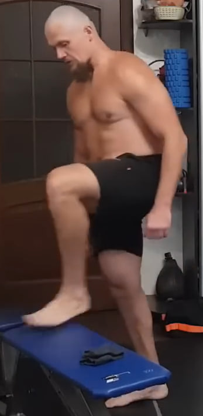
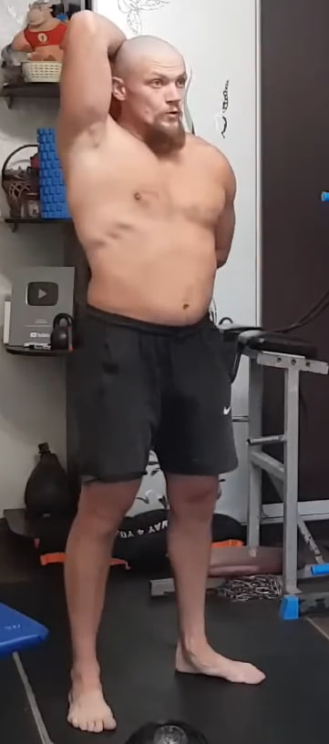
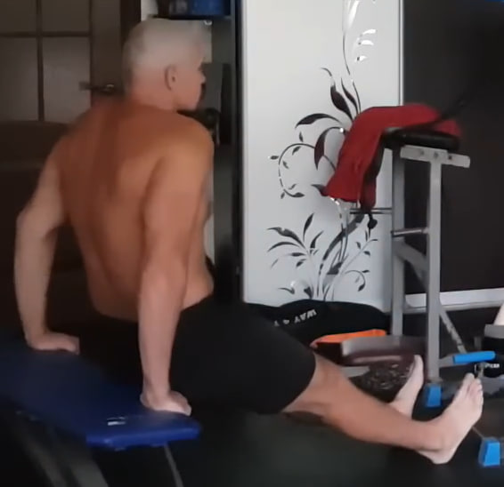
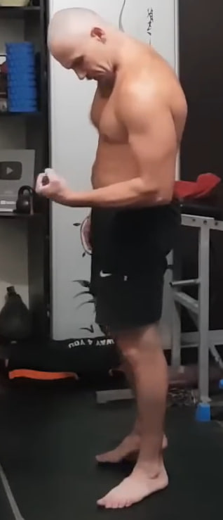
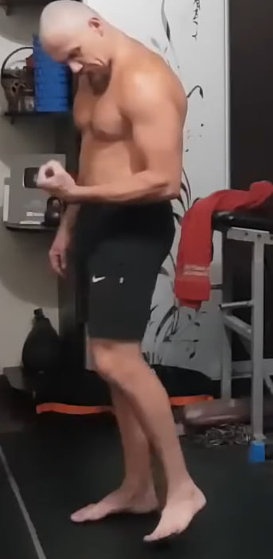
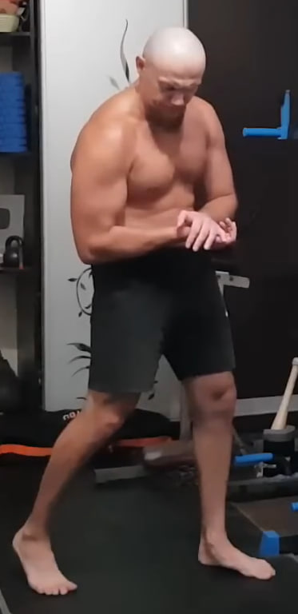

Día 1: empuje (pecho, hombros y tríceps) + cardio y capacidad pulmonar (sin equipo)
Hoy trabajamos empuje (pecho, hombros y tríceps), cardio y capacidad pulmonar, core (abdomen y zona media) con ejercicios simples que caben en una habitación. El objetivo es construir fuerza útil, resistencia y control corporal con el mínimo de equipo.
Prioriza la técnica, respira con control y acumula consistencia: incluso una sesión corta suma cuando la repites día tras día.
1. Flexiones profundas y lentas
Antes de empezar: haz el calentamiento y repasa la respiración. (No lo saltes.)

Realiza 10 flexiones con las manos elevadas sobre dos kettlebells o pilas de libros. Baja en 4 segundos y sube en 1 segundo. Si es muy difícil, haz flexiones normales o con las rodillas apoyadas, manteniendo el cuerpo en línea recta.
2. Elevación parcial del abdomen
Antes de empezar: haz el calentamiento y repasa la respiración. (No lo saltes.)


Repite el ejercicio de abdomen. Haz 10 repeticiones con movimiento controlado, exhalando al subir e inhalando al bajar.
3. Sentadillas profundas con codos a las rodillas
Antes de empezar: haz el calentamiento y repasa la respiración. (No lo saltes.)
Seguridad en sentadillas: mantén los talones apoyados y el peso en el medio del pie. Las rodillas deben seguir la dirección de los dedos (sin colapsar hacia adentro). Si eres principiante o sientes molestias, evita que las rodillas se adelanten demasiado y piensa en “caderas atrás” para proteger la articulación.

Coloca los pies al ancho de hombros con el peso en los talones. Baja a una sentadilla profunda, llevando los codos hacia las rodillas para mantener la postura. Realiza 10 repeticiones, manteniendo el pecho abierto y la espalda recta.
4. Saltos en posición de plancha
Antes de empezar: haz el calentamiento y repasa la respiración. (No lo saltes.)


Desde la posición de plancha, salta llevando los pies hacia adelante y luego vuelve a la plancha con otro salto. Mantén el abdomen firme y la cadera estable. Haz 10 repeticiones rápidas pero controladas.
5. Burpee sin flexión
Antes de empezar: haz el calentamiento y repasa la respiración. (No lo saltes.)


Desde la plancha, salta con los pies hacia adelante y luego realiza un salto vertical con los brazos abajo. No hay flexión de brazos. Completa 10 repeticiones manteniendo un ritmo fluido y el cuerpo compacto.
6. Saltos estrella desde sentadilla
Antes de empezar: haz el calentamiento y repasa la respiración. (No lo saltes.)
Seguridad en sentadillas: mantén los talones apoyados y el peso en el medio del pie. Las rodillas deben seguir la dirección de los dedos (sin colapsar hacia adentro). Si eres principiante o sientes molestias, evita que las rodillas se adelanten demasiado y piensa en “caderas atrás” para proteger la articulación.


Comienza en sentadilla completa con las manos cerca del suelo. Desde ahí, explota hacia arriba abriendo brazos y piernas en forma de estrella. Aterriza suave, vuelve a la sentadilla y repite 10 veces sin pausas.
7. Subidas al banco
Antes de empezar: haz el calentamiento y repasa la respiración. (No lo saltes.)

Apoya un pie en un banco o taburete y empuja con esa pierna para subir el cuerpo, elevando la otra rodilla. Baja con control y cambia de pierna. Realiza 10 repeticiones por pierna manteniendo el torso recto.
8. Estiramiento con toalla detrás de la cabeza
Antes de empezar: haz el calentamiento y repasa la respiración. (No lo saltes.)
Protocolo isométrico: tensión 10 s + descanso 5 s × 10 repeticiones (por lado, si aplica). Respira 3‑3‑3 durante la tensión (inhalar 3 s, retener 3 s, exhalar 3 s) y usa 3‑6‑3 entre series para recuperar. Más detalles: Respiración.


Toma una toalla o cinturón detrás de la cabeza, con un brazo arriba y otro abajo. Tira en direcciones opuestas creando tensión debajo del omóplato. Repite 10 veces alternando la posición de los brazos.
9. Fondos en banco para tríceps con pausa
Antes de empezar: haz el calentamiento y repasa la respiración. (No lo saltes.)
Protocolo isométrico: tensión 10 s + descanso 5 s × 10 repeticiones (por lado, si aplica). Respira 3‑3‑3 durante la tensión (inhalar 3 s, retener 3 s, exhalar 3 s) y usa 3‑6‑3 entre series para recuperar. Más detalles: Respiración.


Con las manos en el borde de un banco y las piernas extendidas al frente, baja flexionando los codos y luego sube sin bloquearlos por completo. Repite 10 veces controlando hombros y pecho.
10. Flexiones profundas repetidas
Antes de empezar: haz el calentamiento y repasa la respiración. (No lo saltes.)

Repite el mismo ejercicio de flexiones profundas del inicio: manos elevadas, 4 segundos para bajar y 1 segundo para subir. Realiza otras 10 repeticiones manteniendo el cuerpo alineado y el abdomen activo. Repite el mismo ejercicio de flexiones profundas del inicio: manos elevadas, 4 segundos para bajar y 1 segundo para subir. Realiza otras 10 repeticiones manteniendo el cuerpo alineado y el abdomen activo.
11. Bombeo de antebrazo con agarre
Antes de empezar: haz el calentamiento y repasa la respiración. (No lo saltes.)



Aprieta con fuerza un calcetín o un trozo de tela en el puño y mueve la muñeca arriba y abajo sin soltar el agarre. El movimiento es corto, continuo y con máxima tensión para llenar de sangre el antebrazo antes del trabajo principal. Haz 10 repeticiones por mano con un movimiento corto y continuo para llenar de sangre el antebrazo antes del trabajo de bíceps.
12. Flexión isométrica de bíceps
Antes de empezar: haz el calentamiento y repasa la respiración. (No lo saltes.)
Protocolo isométrico: tensión 10 s + descanso 5 s × 10 repeticiones (por lado, si aplica). Respira 3‑3‑3 durante la tensión (inhalar 3 s, retener 3 s, exhalar 3 s) y usa 3‑6‑3 entre series para recuperar. Más detalles: Respiración.

Coloca una mano sobre la otra como si la mano inferior fuera una pesa. La mano de trabajo tira hacia arriba mientras la otra ofrece resistencia hacia abajo. Flexiona el brazo como en un curl de bíceps con tensión constante. Alterna brazos en cada repetición hasta completar 10 por lado.
Cierre
Experimenta: ajusta ángulos, rango y puntos de tensión hasta encontrar la versión que te sienta bien. Lo importante es que el entrenamiento sea sostenible y te dé ganas de volver. Crea condiciones para entrenar con regularidad, aunque sea poco: 10 minutos cuentan. Esta rutina está pensada para eso: que puedas cumplir incluso con poco espacio, poco tiempo y circunstancias difíciles.